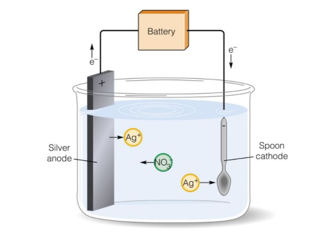
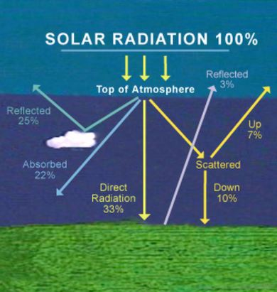
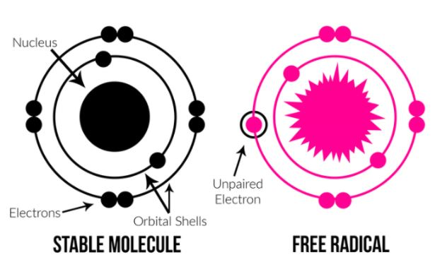
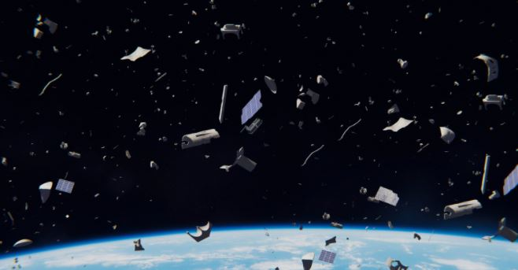
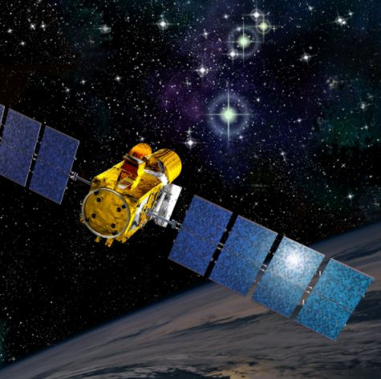

Electroplating is the process of coating one metal onto another metal using an electrolytic cell. Electroplating
can be used in a variety of different applications, from increasing corrosion resistance, or improving the aesthetic appearance of
a product (like in jewelry). Electroplating is a fairly easy concept, and requires four main components; The anode, the cathode, a
solution, and a power source. In chemistry, the resulting reaction is called a “redox” reaction (reduction and oxidation reaction).
Once the positively charged electrode and negatively charged electrode (anode and cathode, respectively) are placed in the solution
and connected, the battery supplies a current to the anode, causing the anode to oxidize and allowing the cathode to reduce.

Let’s take a look at a common electroplating process of coating a spoon with silver, using Silver
(Ag) as the anode, and a cheap metal as the cathode. When power is supplied to the anode, the silver atoms dissolve in the electrolyte
solution (Silver Nitrate) as positive ions after being oxidized. The current then moves these ions onto the metal spoon, and the
resulting product is a silver-plated spoon.
The reaction at the cathode:
Ag → Ag+ + e-
The reaction at the anode:
Ag+ + e- → Ag
Space is not exactly a safe environment, and engineers must take into consideration the many different factors and threats
that could damage spacecraft and satellites orbiting the Earth. The following issues arise commonly in
satellites, and can be solved with electroplating.
Extreme Light and Radiation
Although humans see the sun every day from Earth, that isn’t to say light from the sun is safe. Because
Earth has an atmosphere, the radiation and heat from the sun is dissipated, reflected, or absorbed before it reaches us. Satellites are
exposed to the direct sunlight, and are easily damaged from the heat and glare. Builders and engineers can use electroplating to place
reflective metals and/or metallic insulation to prevent heat damage to sensitive components.

Thermal Cycling
Spacecrafts in orbit undergo a process called “thermal cycling”, which is the process of materials
expanding and contracting from drastic temperature changes. This degrades the materials used in spacecraft over time. Electroplating
allows for better heat dissipation across the entire spacecraft.
Atomic Oxygen
Atomic oxygen affects all objects in space, and is produced when UV radiation reaches the oxygen in
the upper atmosphere on Earth. AO is a free radical, meaning it has an unpaired electron which makes it highly reactive. AO oxidizes
metals much faster than typical molecular oxygen molecules, and as such, electroplating is used to combat this oxidation.

Space Debris
Satellites orbit at very high speeds, along with other space debris. At such high speeds, collisions
with small objects can cause extreme damage, and thus electroplating is used to coat and increase the strength of the exterior.

Why Is Gold So Common?
Although gold is very expensive, a lot of NASA’s satellites and spacecraft use a generous amount for electroplating.
Gold has many unique and valuable properties to the space industry, including corrosion resistance, radiation reflectivity, light absorption,
malleability, and conductivity.
Cheaper metals such as copper tarnish quickly out in space, but pure gold does not tarnish at all. In
terms of reflectivity, gold has the unique property of being able to reflect infrared radiation, as well as ultraviolet radiation,
better than most other metals. On the topic of reflectivity, gold absorbs a lot of light, meaning hotspots, blinding lights, and glares
caused by reflections are eliminated when using this metal.

Last but not least, gold is an extremely malleable metal, meaning it can
form intricate shapes and patterns, even when stretched. This makes it easy to work with when manufacturing and designing spacecraft.